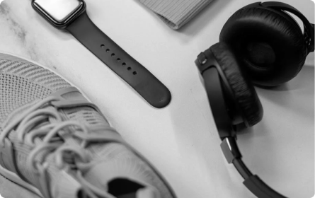

XX99 MARK I HEADPHONES
As the gold standard for headphones, the classic XX99 Mark I offers detailed and accurate audio reproduction for audiophiles, mixing engineers, and music aficionados alike in studios and on the go.
$1,750
As the gold standard for headphones, the classic XX99 Mark I offers detailed and accurate audio reproduction for audiophiles, mixing engineers, and music aficionados alike in studios and on the go.
As the headphones all others are measured against, the XX99 Mark I demonstrates over five decades of audio expertise, redefining the critical listening experience. This pair of closed-back headphones are made of industrial, aerospace-grade materials to emphasize durability at a relatively light weight of 11 oz.
From the handcrafted microfiber ear cushions to the robust metal headband with inner damping element, the components work together to deliver comfort and uncompromising sound. Its closed-back design delivers up to 27 dB of passive noise cancellation, reducing resonance by reflecting sound to a dedicated absorber. For connectivity, a specially tuned cable is included with a balanced gold connector.
Headphone Unit
Replacement Earcups
User Manual
3.5mm 5m Audio Cable

Located at the heart of New York City, Audiophile is the premier store for high end headphones, earphones, speakers, and audio accessories. We have a large showroom and luxury demonstration rooms available for you to browse and experience a wide range of our products. Stop by our store to meet some of the fantastic people who make Audiophile the best place to buy your portable audio equipment.